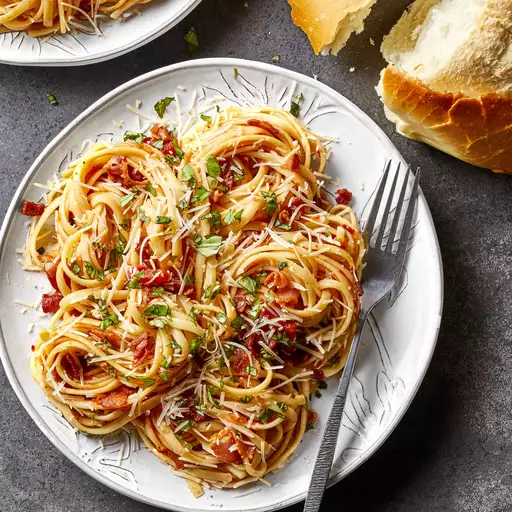

Amatriciana

Description
A Roman classic combining tomatoes and bacon - utter decadence!
Comfort food at it's finest!
Ingredients
- 4 slices of diced bacon
- Half a cup of chopped onion
- 1 tsp of minced garlic
- Crushed red pepper to taste
- 2 Cans of Tinned tomatoes
- 500g of linguine pasta
- Chopped Basil
- Parmesan to taste
Method
- Cook diced bacon in a large saucepan over medium high heat until crisp, about 5 minutes. Drain all but 2 tablespoons of drippings from the pan.
- Add onions, and cook over medium heat about 3 minutes. Stir in garlic and red pepper flakes; cook 30 seconds. Add canned tomatoes, undrained; simmer 10 minutes, breaking up tomatoes.
- Meanwhile, cook the pasta in a large pot of 4 quarts boiling salted water until al dente. Drain.
- Stir basil into the sauce, and then toss with cooked pasta. Serve with grated Parmesan cheese.
Home